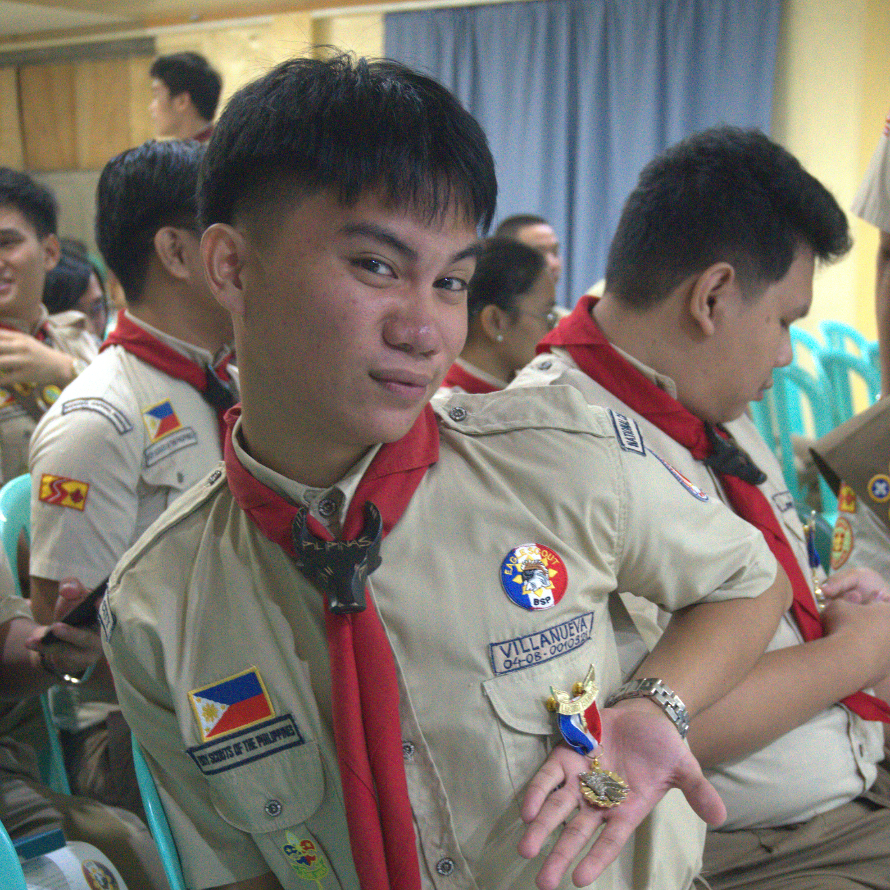

TERM OF ASSOCIATION 2026–2028
PRESIDENT
ES. Joshua Delcel A. Villanueva
Leading the Quezon City Council Eagle Scout Association in its continued pursuit of leadership development, brotherhood, community service, and the growth of the next generation of Eagle Scouts.